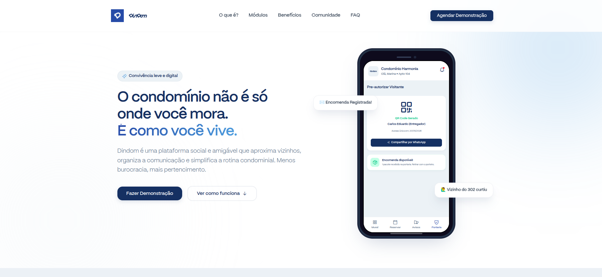
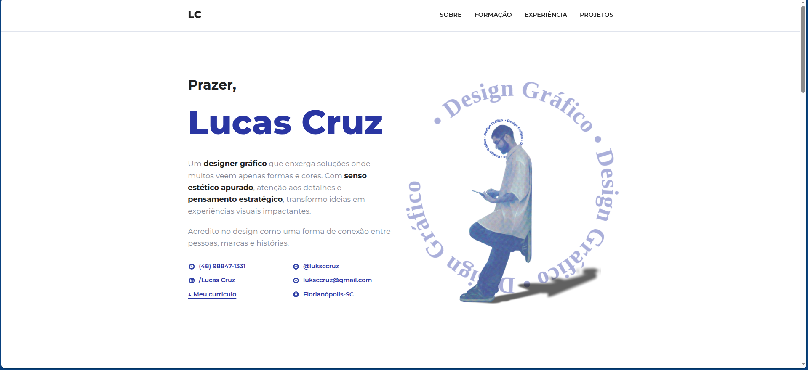
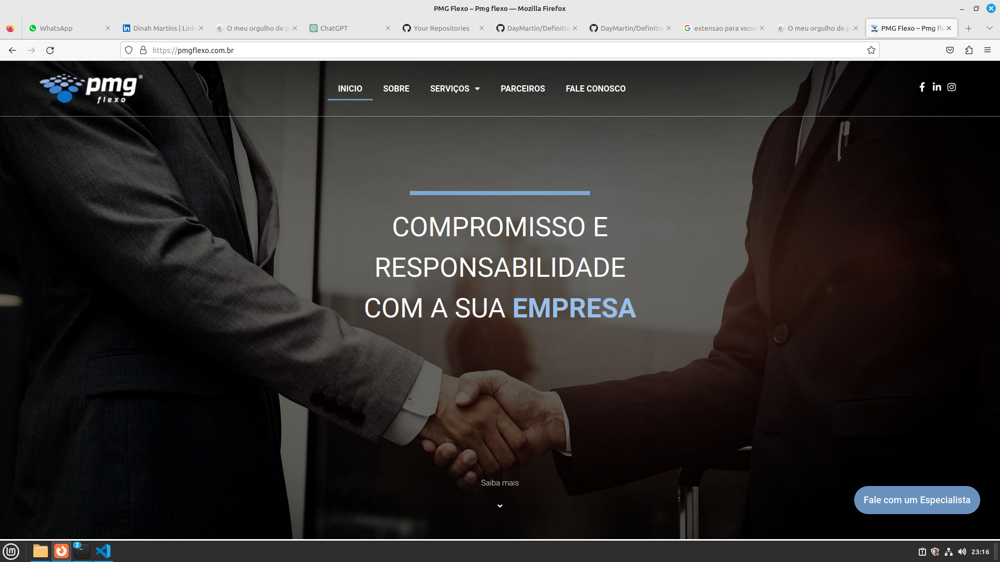
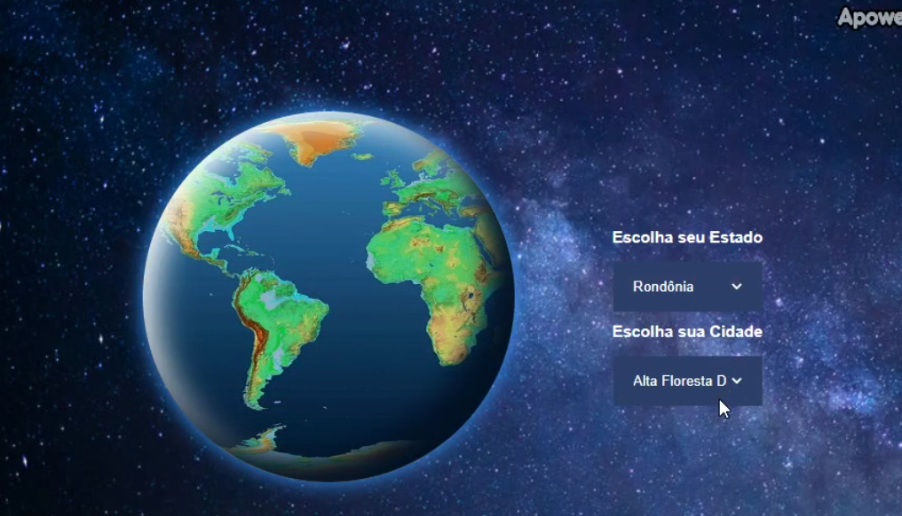

Projetos Frontend & Portais
Interfaces de alta fidelidade visual, SEO otimizado, acessibilidade e carregamento veloz
Landing Page Comercial Dindom
HTML5 • CSS3 • JavaScript • SEO Otimizado • Responsivo
O Projeto
Landing page de conversão para o software Dindom (plataforma de condomínios). Estruturada sob princípios rígidos de indexação orgânica (SEO) e velocidade.
Decisões de Engenharia
- Performance do Core Web Vitals: Otimização de imagens (WebP), carregamento assíncrono e deferido de scripts externos e eliminação de CSS bloqueante, obtendo nota acima de 95% no Lighthouse.
- Semântica & SEO: Emprego rigoroso de tags HTML5, estruturação adequada de cabeçalhos (H1-H6) e metatags estruturadas (Open Graph) para indexação eficiente.

Portfólio Profissional de Lucas
React.js • CSS Modules • Web Animations • Responsividade
O Projeto
Interface web moderna de portfólio profissional, utilizando animações suaves e layouts em grade baseados em Flexbox e CSS Grid para transições fluidas.
Decisões de Engenharia
- Modularidade de Componentes: Desenvolvido em React estruturando componentes totalmente reaproveitáveis e isolados através de CSS Modules, mitigando vazamento de estilos globais.
- Fluidez de Interface: Integração de micro-interações responsivas nas ações de clique e transições de páginas dinâmicas otimizadas.

Portal Advocacia Camila Barreto
WordPress • Custom CSS3 • Gutenberg Layouts • Lead Conversion
O Projeto
Website corporativo para escritório de advocacia. Focado em captação ativa de leads e sobriedade de comunicação visual.
Decisões de Engenharia
- CSS Customizado e Otimização CMS: Substituição de construtores pesados (page builders bloated) por blocos nativos customizados via CSS3 sob medida, melhorando o carregamento em 40%.
- Design Responsivo Focado em Conversão: Adaptação móvel estrita das chamadas de ação (CTA) para canais de mensagens rápidas (WhatsApp/Email).

Portal Corporativo Tizza Tecnologia
WordPress • Custom CSS Grid • Performance Tuning • API Integration
O Projeto
Portal de comunicação institucional e exposição de serviços da Tizza Tecnologia. Serve como hub para divulgação de produtos da empresa.
Decisões de Engenharia
- Estrutura de Blocos Limpa: Desenvolvimento de folhas de estilo customizadas integradas às folhas nativas do tema, gerando uma interface veloz e livre de scripts excessivos.
- SEO Técnico Corporativo: Sitemap, dados estruturados JSON-LD e tags canônicas configuradas de forma automatizada para indexar os pilares de produto corporativos.

Website Institucional PMG Flexo
WordPress • Custom Theme Styles • Image Optimization • Responsive Navigation
O Projeto
Interface institucional e catálogo de maquinários e serviços para a indústria de impressão flexográfica PMG Flexo.
Decisões de Engenharia
- Compressão e Asset Delivery: Otimização de imagens técnicas de grande escala para formatos modernos, acelerando o tempo de carregamento inicial em conexões de rede restritas.
- Navegação Mobile Fluida: Criação de barras de menus e galerias de imagens responsivas com interações simplificadas por toque.

Website Corporativo PMG Narrow
WordPress • Custom CSS adjustments • Cross-Device Optimization • SEO Metadata
O Projeto
Site voltado ao braço de máquinas de banda estreita da PMG. Estruturado para exibir galerias de especificações de equipamentos de alta precisão.
Decisões de Engenharia
- Ajustes de Grid Responsivo: Desenvolvimento de blocos CSS organizados de maneira proporcional ao viewport, prevenindo quebras em tablets e celulares de telas pequenas.
- Aderência de Metadados: Implementação de dados estruturados para otimização de exibições em buscas orgânicas direcionadas B2B.

Portal Criativo Fruto Criativo
WordPress Custom Theme • CSS Grids • Speed Optimization • Portfolio Layout
O Projeto
Website da agência Fruto Criativo para divulgação de cases de design, fotografia e estratégias de marketing digital.
Decisões de Engenharia
- Layout Assimétrico em CSS Grid: Utilização avançada de posicionamento CSS para dar uma identidade moderna de agência de publicidade sem comprometer o fluxo de leitura móvel.
- Otimização de Carregamento: Minificação de arquivos de estilos e scripts inline para melhorar as taxas de indexação em dispositivos de baixa performance.

Mini-App Chapéu Seletor (Chamada API IBGE)
Vue.js • HTML5 • Vanilla CSS3 • Axios • REST API Integration
O Projeto
Frontend reativo integrado de consumo de dados públicos estruturados, fazendo chamadas HTTP para retornar a árvore de estados e municípios das APIs de Localidades do IBGE.
Decisões de Engenharia
- Reatividade Dinâmica: Emprego de reatividade do Vue para carregar dinamicamente as cidades dependendo do estado selecionado pelo usuário, com feedbacks rápidos de loaders.
- Componentes Desacoplados: Separação em estruturas independentes para os dropdowns dinâmicos e área de apresentação dos resultados, facilitando a portabilidade do código.
